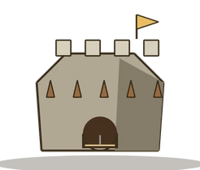

시공초월 올스타 · 천하제일 난투
꼬마영웅 대난투
전국을 누비고, 성을 다스리고, 오늘도 한 판!
80개 거점 · 19개 병과 · 701명 장수 · 최대 32×32 대형 전장
🔊
오늘은 어느 난투에 낄까?
시나리오는 언제든 변경할 수 있습니다.
어느 세력으로 일어설까
190
반동탁연합과 군웅할거
세력을 고르면 그 군주의 본거지에서 시작합니다.
 위
위
0
0
0
190년 1월봄현령명성 0

요새 재야(공백지)허창
위
대도시
Lv.1
현령
1년차 1월
1 / 1
0
0
0
책사 첫걸음

맑음 · 민심 안정
전장
공성전
1턴째
아군
아군0
0적군
적 전멸
아군적군위태
화면을 끌어 이동 · 부대를 눌러 선택
Lv.1조조군주평지
공 0방 0책공 0책방 0이동 0사거리 0
세로 화면 전용
《꼬마영웅 대난투》는 세로 화면에 맞춰 만들었어요.
휴대폰을 세로로 돌려 주세요.